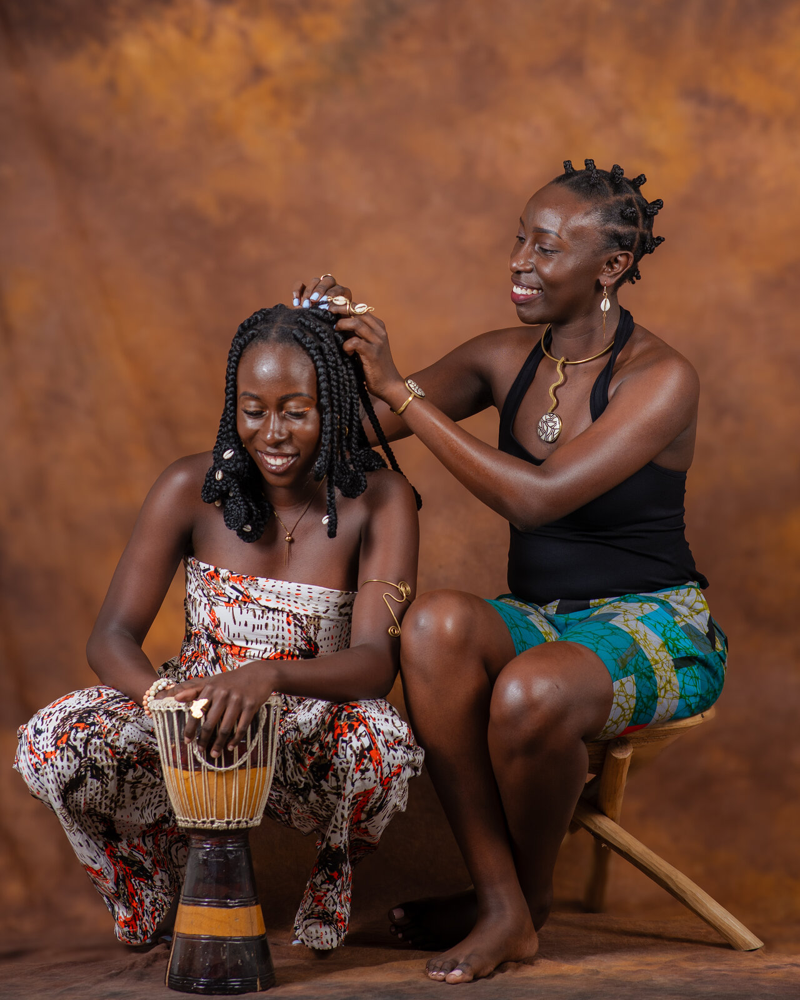

Combing it dry
Dry coils knot at every bend. A comb dragged through them snaps strands and pulls the scalp along for the ride.
What we doHair detangling
Gentle hands. Plenty of time.
A slow, careful detangle for Kenyan and African women, done by hand and one small section at a time, until the comb moves through without a fight.

Most of us learned to detangle by being detangled.
A low stool, somebody’s knees on either side of you, your head tilted back and your jaw set. Whoever held the comb loved you and was also in a hurry, and the comb had no patience at all.
So you sat still and cried quietly, because crying loudly only made the session longer. You were told you were tender-headed, as if the problem was your scalp and not the way it was being handled.
Plenty of grown women still carry that. We put wash day off. We leave braids in three weeks past their time to avoid the comb, and we wrap everything up and call it a style. A tangled head is not a character flaw. It is coily hair doing what coily hair does, and it asks for time and slip, never force.
Dry coils knot at every bend. A comb dragged through them snaps strands and pulls the scalp along for the ride.
Working down from the roots shoves every small knot into a bigger one at the ends. Ends first, then upward, is the only direction that works.
Pain usually means somebody is short on time. A head that is detangled properly takes exactly as long as it takes.

Nobody should have to be brave to get their hair done.
No tricks and no secret tool. Just the order of things done properly, and the patience to keep to it.
Before any comb comes out we feel the hair. How dense it is, where it has matted, whether last month’s braids left lint at the roots. Every head gets its own plan.
Hair is detangled damp and well cushioned, never dry. Water, a conditioner with real slip and a little patience do most of the work before a comb is involved.
Small sections keep every knot in view and keep your scalp from taking the strain. Your head stays relaxed, which makes everything after it easier.
Fingers first, then a wide-tooth comb, from the tips toward the root. If a knot holds, we stop and loosen it instead of forcing the comb through.
Tell us the moment something pulls. We stop, adjust and carry on. Nobody here needs you to be tough about it.
You leave with hair that is clean, moisturised and set in a style that will not knot straight back up.
Kenyan hair, African hair, every pattern from loose waves to the tightest 4C coil. If it tangles, we can help.
Message us on WhatsApp and tell us what your hair has been through. We will take it from there.